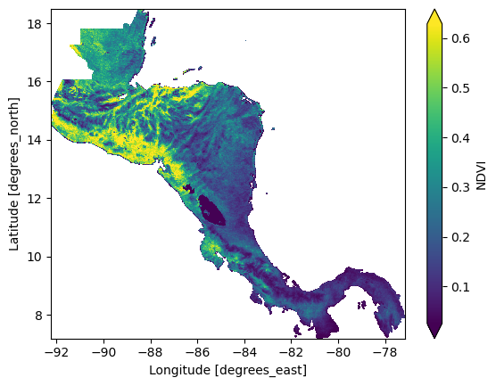

Welcome to the restee documentation
restee is a package that aims to make plugging Earth Engine (EE) computations into downstream Python processing easier. The EE REST API allows user to interface with EE using REST API calls which allows for more flexibility in working with EE, however, without detailed knowleged of the API use it can be somewhat cryptic. restee aims to provide a user-friendly means to access computed server-side objects (like image data) from the earthengine-api API to a local Python enviroment (client-side).
It should be noted that restee relies on fairly new and advanced EE features that may not be suitable for all users (see warning from the EE team). If you are new to Earth Engine, please get started with the JavaScript guide.
Getting Started
This section is meant purely as a demonstration of what is possible, please see the Installation page for how to install package and setup the authentication then the Usage page for in depth information.
In this case, we will compute a median NDVI composite for the Summer months over Central America using MODIS. Then we will request the data locally as a xarray.Dataset object so we can then use for local processing.
import ee
ee.Initialize()
import restee as ree
# get an authenticated session with GCP for REST API calls
session = ree.EESession("<CLOUD-PROJECT>","<PATH-TO-SECRET-KEY>")
# use ee to get a featurecollection for USA
countries = ee.FeatureCollection("USDOS/LSIB_SIMPLE/2017")
camerica= countries.filter(ee.Filter.eq("wld_rgn", "Central America"))
# define the domain imagery will be requested for at ~1km resolution
# in this case it is the computed Central America FeatureCollection
domain = ree.Domain.from_ee_geometry(session,camerica,resolution=0.01)
# define some image computations
# here we calculate median NDVI for the summer months
modis = (
ee.ImageCollection("MODIS/006/MOD09GA")
.filterDate("2020-06-01","2020-09-01")
.map(lambda x: x.normalizedDifference(["sur_refl_b02","sur_refl_b01"]))
.median()
.rename("NDVI")
)
# request the ee.Image pixels as a xarray dataset for the domain
ndvi_ds = ree.img_to_xarray(session,domain,modis,no_data_value=0)
# inspect the local xarray Dataset object
ndvi_ds
# output
# <xarray.Dataset>
# Dimensions: (lat: 1130, lon: 1509)
# Coordinates:
# * lon (lon) float64 -92.23 -92.22 -92.21 -92.2 ... -77.17 -77.16 -77.15
# * lat (lat) float64 18.48 18.47 18.46 18.45 ... 7.225 7.215 7.205 7.195
# Data variables:
# NDVI (lat, lon) float32 nan nan nan nan nan nan ... nan nan nan nan nan
From this point on the computed data is local to your system so you can do with it what you want. This allows the data to be plotted, persisted, or fed into another downstream process. For the sake of example, here we will plot the result.
ndvi_ds.NDVI.plot(robust=True,cmap="viridis")

Again, this quick example was to highlight how a user may define an EE computation using the earthengine-api and request the data into a local data structure. One may use restee to get zonal statitics calculated for feature collections or even explore collection metadata, any format on EE can be requested locally. For more details, please see the Usage page.
Get in touch
Please report any bugs, ask questions, or suggest new features on GitHub.
Contribute
Contributions are welcome, and they are greatly appreciated! Every little bit helps, and credit will always be given.
License
restee is available under the open source MIT License.